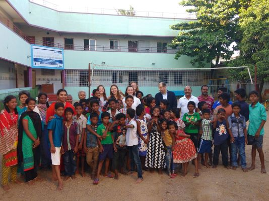

The Child Home Saranalaya is situated in Thandalam, a small town near to the metropolis Chennai, in the south of India.
Our home is a shelter for about 50 orphan,semi orphan and disabled children from the slum areas around Chennai.
A Virtual TourQuite striking on entering the home is the warm enjoyable familial atmosphere. The children have their own place to play on the big inner court in sand. There is a small playground where the smallest children can play as much as they wish. The bigger children can enjoy themselves by playing ballgames like volleyball and cricket.All over there has been some attention to green natural aspects too. Bananatrees, coconut trees and flourishing flowertrees decorate the home. The house is constructed in a L-shape. Located in the centre there is a big room which is used as dining hall and relaxation room. We have two big separated rooms for boys and girls. In the middle is a big play ground with play tools for small children. |
 |